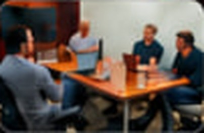

Digital progress made simple, refined by people for good.
Since 2019, crafting Web and Mobile innovations with industry experts and next-gen innovators. We link human expression with AI to test boundaries.
- novafone
- vertex
- ClearWave
- forma
- orbitcloud
- nexora

Our work story Transforming KITE’s digital future through a Tech Lab in Delhi.